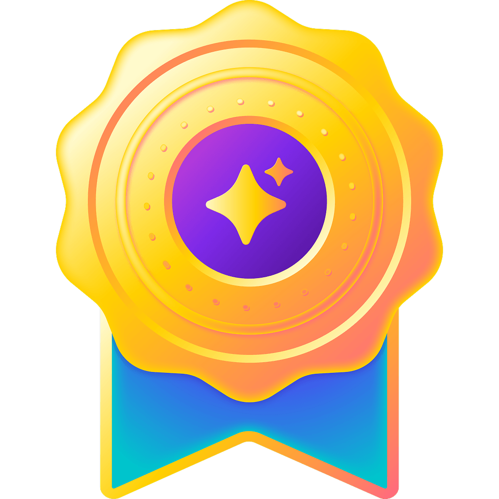
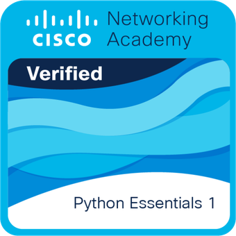
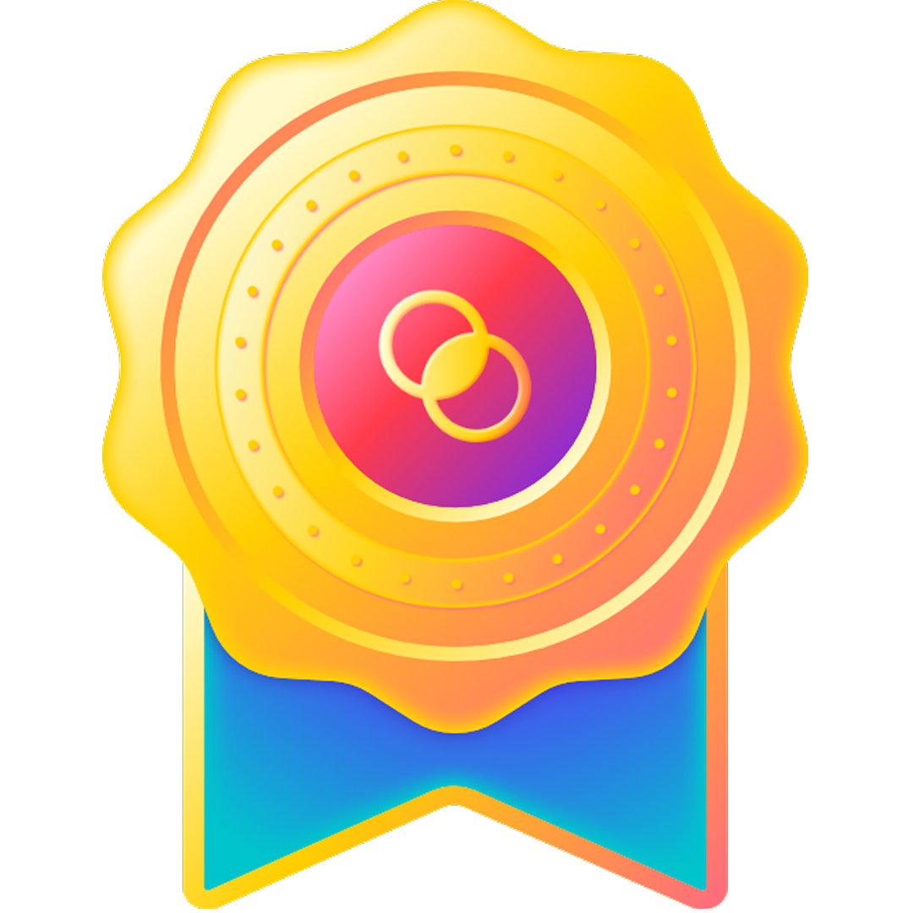

Data Analysis
Cleaning, exploring, and communicating data through structured analysis, dashboards, and visual storytelling.
SQL · Python · Excel · Power BI
I craft data-driven insights and intuitive visual interfaces that solve real user problems. My toolkit includes SQL, Python, Power BI, Figma, and end-to-end user research.
Currently open to full-time roles in Data Analytics, UI/UX Design, and Front-End Development.
"Data made actionable. Interfaces made effortless."
4+
Featured Projects
BS CpE
RTU Graduate (2026)
DATA + UI
Core toolkit
1.54
RTU GWA
BS Computer Engineering graduate blending technical rigor with a passion for Data Analytics. Knowledgeable in SQL, BigQuery, Advanced Excel, and data visualization, with experience in turning raw datasets into clear visual dashboards. Equipped with structured problem-solving and business fundamentals through the McKinsey Forward program, I am eager to contribute analytical rigor and data insights to a high-performing team.
What I do
Cleaning, exploring, and communicating data through structured analysis, dashboards, and visual storytelling.
SQL · Python · Excel · Power BI
User research, wireframes, visual systems, and prototypes that make complex ideas feel clear and intuitive.
Figma · Canva · Researching
Responsive, accessible front ends that connect meaningful metrics with thoughtful user flows and interaction design.
HTML · CSS · JavaScript · BigQuery
A practical toolkit for turning data into dashboards, interfaces, and useful systems.
Data analyst toolkit
A quick, recruiter-friendly view of the tools I use to query, understand, visualize, and communicate information.
Currently learning
Selected work
Explore UI/UX case studies and data-informed systems. Select a project to view the problem, process, tools, and outcome.
Professional development
A growing collection of training, workshops, and credentials that support my design and engineering practice.

Canva Design School
Completed Canva Design School’s AI Essentials 2026 certification, gaining foundational skills in leveraging Canva’s artificial intelligence tools, prompt engineering, and AI-driven creative workflows.
Cisco
Completed Cisco’s Prompt Like an Engineer course, mastering an engineering approach to design, iterate, verify, and reuse prompts. Skilled in leveraging cloud and local LLMs while protecting sensitive data, systematically evaluating AI outputs, and maintaining human-in-the-loop accountability.

Cisco
Completed the Python Essentials 1 course by Cisco and OpenEDG Python Institute. Mastered core computer programming concepts, Python syntax, and procedural programming while leveraging the Python Standard Library to solve real-world coding challenges.

Canva Design School
Demonstrates foundational skills in visual communication, layout structuring, and graphic design principles certified by Canva. Focused on applying core design concepts to create clear, visually compelling digital assets and interface elements.
Background
NITORI - BGC
Responsible for managing checkout operations and processing customer transactions efficiently as a part-time, on-site Cashier at NITORI. This role ensures an accurate, friendly payment experience for retail customers.
AHD Advance Communication System, Inc.
Supported technical documentation and Outside Plant network design work, including AutoCAD IEP planning, site-survey orientation, and Excel-based data trackers. Gained exposure to industry-scale telecommunications infrastructure through a PLDT site visit.
Rizal Technological University - Boni Campus
Focused on embedded systems, IoT, mechatronics, software prototyping, and user-centered interface design through academic and capstone projects.
Continuous learning
Working knowledge across Figma, Canva, Python, Excel, MySQL, Power BI, Tableau, and data analysis.